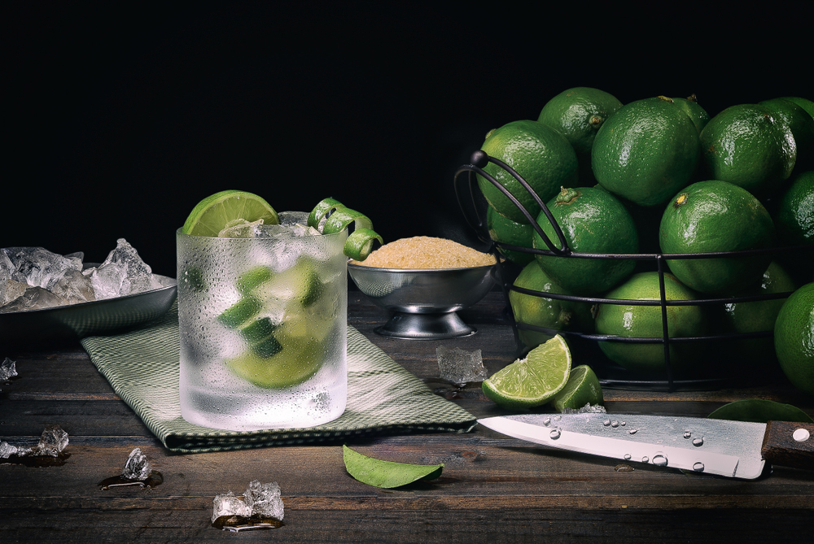

Lime Caipirinha

I know you all have been waiting for this part. Honestly, so was I.
And nothing better than a classic to get us started. Today you will learn how to make the best and simplest lime caipirinha!
For those who've never heard of it, caipirinha is a brazilian cocktail made with cachaça (a distilled spirit made from sugarcane), fruits and sugar.
But don't take it for granted! Tough deliciously refreshing, it can easily knock you out since you can barely taste the alcohol flavor within it.
Be sure to stick to recipe until the end. I'll give you some tips to level up your caipirinha!
Ingredients
- 2 limes
- 4 tablespoons sugar
- 2 ounces cachaça
- 1 cup ice
Steps
- Cut the limes into wedges
- Put them into a caipirinha glass
- Add the sugar
- Muddle gently until most of the juice is squeezed out of the lime
- Add the ice
- Slowly pour the cachaça over the ice
- Fill the glass with more ice if possible
- Gently stir the cocktail
Tips
- Remove the white part from the lime wedges (which was the core of the fruit). If you don't, it can bitter the whole cocktail
- Do muddle only the necessary to release the juices. Don't overdo it!
- You can use a shredded ice, if you want to. But the cocktail will get diluted faster as well
- You can also use a pitcher. The method is the same
- For hot days, you can sink a lemon popsicle in the cocktail. You will love it, I guarantee
- For garnishing, you can use lime-peel twists or slices